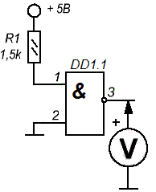
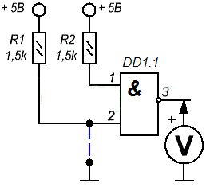
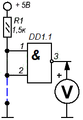

Исследование работы микросхемы К155ЛА3
На макетную плату установите микросхему К155ЛА3 к выводам подсоедините питание (вывод 7 - к "минус", вывод 14 - к +5 В). Для выполнения замеров лучше применить стрелочный вольтметр, имеющий сопротивление более 10 кОм на вольт. При использовании стрелочного вольтметра, по движению стрелки, можно определить наличие низкочастотных импульсов.
После подачи напряжения, измерьте напряжение на всех выводах К155ЛА3. При исправной микросхеме напряжение на выходных выводах (3, 6, 8 и 11) должно быть около 0,3 В, а на выводах (1, 2, 4, 5, 9, 10, 12, и 13) около 1,4 В.
Для исследования функционирования логического элемента 2И-НЕ микросхемы К155ЛА3 возьмем первый элемент. Его входом служат выводы 1 и 2, а выходом является вывод 3. Сигналом логической "1" будет служить плюс источника питания через токоограничивающий резистор 1,5 кОм, а логический "0" будем брать с минуса питания.
Опыт первый (рис.1): Подадим на вывод 2 логический "0" (соединим ее с минусом питания), а на вывод 1 логическую единицу (плюс питания через резистор 1,5 кОм). Замерим напряжение на выходе 3, оно должно быть около 3,5 В (напряжение лог. 1)

Рис. 1 - Схема подключения микросхемы К155ЛА3 для первого опыта
Вывод: Если на одном из входов логический "0", а на другом логическая "1", то на выходе К155ЛА3 обязательно будет логическая "1".
Опыт второй (рис.2): Подадим логическую "1" на оба входа 1 и 2 и дополнительно к входу 2 подключим перемычку, второй конец которой будет соединен с минусом питания. Подадим питание на схему и измерим напряжение на выходе.

Рис. 2 - Схема подключения микросхемы К155ЛА3 для второго опыта
Оно должно быть равно логической "1". Теперь уберем перемычку, и стрелка вольтметра укажет напряжение не более 0,4 В, что соответствует уровню логическому "0". Устанавливая и убирая перемычку можно наблюдать как «прыгает» стрелка вольтметра указывая на изменения сигнала на выходе логического элемента микросхемы К155ЛА3.
Вывод: Сигнал логического "0" на выходе элемента 2И-НЕ будет только в том случае, если на обоих его входах будет уровень логической "1".
Следует отметить, что неподключенные входы элемента 2И-НЕ («висят в воздухе»), приводит к появлению низкого логического уровня на входе логического элемента микросхемы К155ЛА3.
Опыт третий (рис.3): Если соединить оба входа 1 и 2, то из элемента 2И-НЕ получится логический элемент НЕ (инвертор). Подавая на вход логический "0" на выходе будет логическая "1" и наоборот.

Рис. 3 - Схема подключения микросхемы К155ЛА3 для третьего опыта
Источники
joyta.ru - Описание микросхемы К155ЛА3
Никулин С.А. Энциклопедия начинающего радиолюбителя